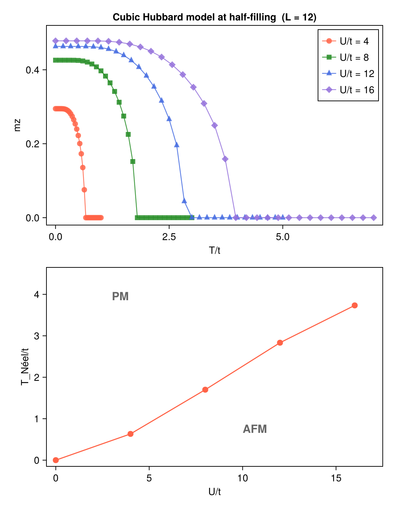

Example: Finite-Temperature AFM on Simple Cubic Lattice
This example demonstrates the finite-temperature antiferromagnetic (AFM) transition of the Hubbard model on the simple cubic lattice at half-filling. It reproduces Fig. 6 of Ref. [1]: the staggered magnetization $m_z$ as a function of temperature for several interaction strengths, and the Néel temperature $T_\text{Néel}$ as a function of $U/t$.
Physical Model
\[H = -t \sum_{\langle ij \rangle,\sigma} c^\dagger_{i\sigma}c_{j\sigma} + U \sum_i n_{i\uparrow}n_{i\downarrow}\]
\[t\]
: nearest-neighbor hopping (set to 1)\[U\]
: on-site Coulomb repulsion (swept over 4, 8, 12, 16)
At half-filling and sufficiently large $U/t$, the ground state develops Néel AFM order: sublattice A carries spin-up excess and sublattice B carries spin-down excess (or vice versa), breaking the $\mathrm{SU}(2)$ spin symmetry. As temperature increases, thermal fluctuations suppress the order and $m_z \to 0$ at $T_\text{Néel}$.
The staggered magnetization (AFM order parameter) is
\[m_z = \frac{1}{N_\text{sub}} \sum_s (-1)^{i_s+j_s+k_s} \frac{\langle n_{s\uparrow} \rangle - \langle n_{s\downarrow} \rangle}{2}\]
where $(i_s, j_s, k_s) \in \{0,1\}^3$ labels the eight sites in the magnetic unit cell.
Method
The calculation uses finite-temperature momentum-space unrestricted Hartree-Fock (solve_hfk) on a $2\times2\times2$ cubic supercell (8 sites × 2 spins → $d = 16$) with a $6\times6\times6$ $k$-grid (216 $k$-points). This matches the CellShape=[12,12,12], SubShape=[2,2,2] setup in Ref. [1].
At each $(U, T)$ point the solver runs n_restarts=10 independent restarts with a random symmetry-breaking field, automatically finding the ordered state whenever it is the true minimum. No prior knowledge of the AFM phase is required.
The Néel temperature is estimated as the highest temperature at which $m_z > 0.01$.
Code
# Magnetic unit cell: 2×2×2 cubic supercell, 8 corner sites
const site_coords_3d = [[Float64(i), Float64(j), Float64(k)]
for k in 0:1 for j in 0:1 for i in 0:1]
const staggered_signs = [(-1)^(i+j+k) for k in 0:1 for j in 0:1 for i in 0:1]
unitcell = Lattice(
[Dof(:cell, 1), Dof(:sub, 8)],
[QN(cell=1, sub=s) for s in 1:8],
site_coords_3d;
vectors=[[2.0,0.0,0.0], [0.0,2.0,0.0], [0.0,0.0,2.0]]
)
dofs = SystemDofs([Dof(:cell, 1), Dof(:sub, 8), Dof(:spin, 2)])
kpoints = build_kpoints([A1, A2, A3], (6, 6, 6)) # 216 k-points
n_elec = 8 * length(kpoints) # half-filling
# One-body hopping (spin-conserving nearest-neighbor)
onebody = generate_onebody(dofs, nn_bonds,
(delta, qn1, qn2) -> qn1.spin == qn2.spin ? -t : 0.0)
# On-site Hubbard U
twobody = generate_twobody(dofs, onsite_bonds,
(deltas, qn1, qn2, qn3, qn4) ->
(qn1.spin == qn2.spin) && (qn3.spin == qn4.spin) && (qn1.spin !== qn3.spin) ? U/2 : 0.0,
order = (cdag, :i, c, :i, cdag, :i, c, :i))
# AFM order parameter
function afm_order_parameter(G_k)
G_loc = dropdims(sum(G_k, dims=3), dims=3) ./ Nk
m = sum(staggered_signs[s] * (real(G_loc[idx[(1,s,1)],idx[(1,s,1)]])
- real(G_loc[idx[(1,s,2)],idx[(1,s,2)]])) / 2
for s in 1:n_sub)
return abs(m / n_sub)
end
# Temperature scan (low → high): 31 uniform points from 0 to 7
for T in T_scan
r = solve_hfk(dofs, onebody, twobody, kpoints, n_elec;
temperature = T,
n_restarts = 10,
field_strength = 1.0,
n_warmup = 15,
tol = 1e-10,
verbose = false)
mz = afm_order_parameter(r.G_k)
endRunning the Example
# Step 1: run HF solver and save results
julia --project=examples -t 8 examples/Cubic_AFM/run.jl
# Step 2: read res.dat and generate figures
julia --project=examples examples/Cubic_AFM/plot.jlrun.jl will:
- Build the $2\times2\times2$ magnetic unit cell and $6\times6\times6$ $k$-grid
- For each $U \in \{4, 8, 12, 16\}$, sweep 31 temperature points from $T/t = 0$ to $7$
- At each $(U,T)$ point, find the ground state via
solve_hfkwith 10 symmetry-breaking restarts - Save all results to
res.dat
plot.jl will read res.dat and produce docs/src/fig/cubic_afm.png.
Results
Panel (a) shows $m_z$ vs $T/t$ for four values of $U/t$. Larger $U$ gives a larger zero-temperature moment and a higher $T_\text{Néel}$. Panel (b) shows $T_\text{Néel}$ vs $U/t$; the curve passes through the origin since there is no AFM order at $U = 0$.

References
[1] T. Aoyama, K. Yoshimi, K. Ido, Y. Motoyama, T. Kawamura, T. Misawa, T. Kato, and A. Kobayashi, H-wave – A Python package for the Hartree-Fock approximation and the random phase approximation, Computer Physics Communications 298, 109087 (2024).